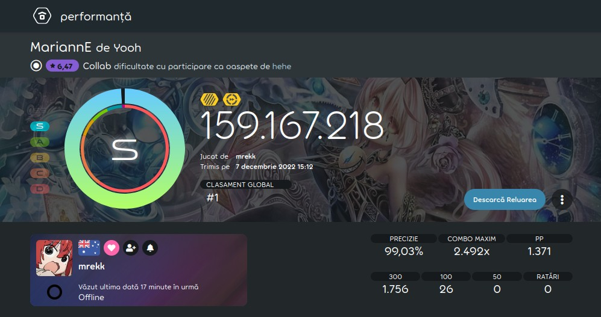

Istorie: ppv2 (2014-prezent)
În timpul în care ppv1 a fost metoda de plasare în clasament a jucătorilor, alte clasamente independente, cu alte metode de plasare în clasament, existau. Una dintre ele era osu!tp. Creatorul lui osu!tp, Tom94, a intrat în echipa de dezvoltare a jocului și a implementat sistemul său. Pe data de 27 Ianuarie 2014, ppv1, până atunci numit doar pp, este înlocuit cu ppv2, sistemul curent de astăzi.
Acest sistem, în timp, a fost și el modificat pentru a oferi jucătorilor cu tot felul de stiluri de joc pp, dar și pentru a face jucători să își dezvolte abilitățile. Cel mai mare update la acest sistem a fost în 16 Ianuarie 2021, când mai mulți membri ai comunități au implementat multe schimbări la acest sistem.
În prezent, acest sistem este încă în continuă dezvoltare și este încă folosit.
În prezent, jucătorul de pe prima poziție a clasamentul global de jucători este mrekk, din Australia.
În prezent, recordul pentru cel mare punctaj de pp acordat unui jucător este de 1371pp, realizat de jucătorul mrekk, pe harta Yooh - MariannE, cu modificările Double Time și Hidden activate. Este de asemenea și primul scor pe acestă hartă cu Double Time.
